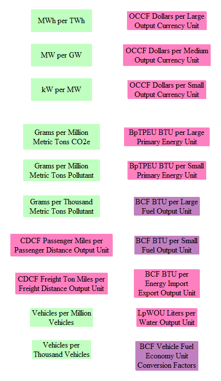
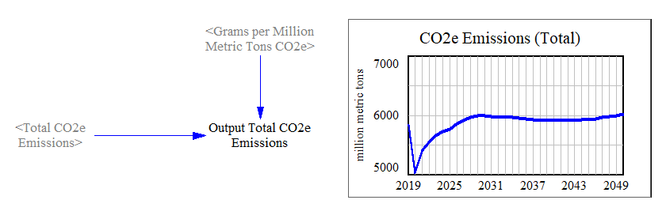
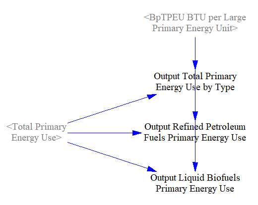
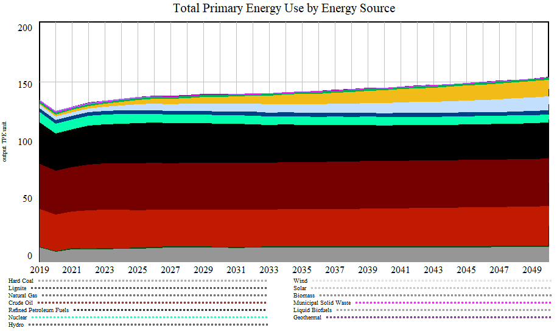

The “Web Application Support Variables” sheet contains a variety of outputs, many (but not all) of which are used in the web application interface for the Energy Policy Simulator (EPS). In general, the EPS uses a single unit for each type of quantity: BTUs for energy, grams for pollutants, etc. These are often not the best units for display on the graphs in the web application. Accordingly, another purpose of this page is to convert each output to the units that will be used in the web application.
Most users of the Vensim model will not need to examine or use the variables on this page. However, referring to this page can be a way to view a variety of interesting and important outputs (useful if you are unsure what sort of model outputs might be worth examining), and it can be a convenient means of seeing certain outputs converted into more meaningful units. This may sometimes save you the trouble of performing a unit conversion yourself.
Unit Conversions
Various unit conversion factors are arrayed in the top left side of the sheet. The following screenshot shows the conversion factors:

Some of these factors, colored in light green, are universally true and so should not be adjusted by the model user, even if customizing the model for a different country. For example, there will always be one million MWh per TWh and one thousand grams per kilogram. Conversion factors for coal, natural gas, and liquid fuels (petroleum gasoline, petroleum diesel, biofuel gasoline, biofuel diesel, and jet fuel) can vary by country, because the chemical composition of these fuels may vary from place to place and from year to year. (In fact, they are implemented as time series in the U.S. model, because the energy content of petroleum gasoline and of biofuel gasoline change very slightly during the model run.)
Dollars per Output Currency Unit converts the model’s internal currency unit (dollars) into whatever currency output unit is most appropriate for the modeled country or region. In the U.S., the output currency units are “billions of US dollars.”
Different sizes of the same unit are used when the same type of thing (such as CO2e emissions or a quantity of fuel) is used in two or more graphs with different scales, or as part of a ratio of quantities. For example, BpTPEU BTU per Large Primary Energy Unit is used in the graph of total primary energy consumed, while BpTPEU BTU per Small Primary Energy Unit is used in the graph of primary energy per unit GDP.
Output Variables
Variables available for use in the web application are arrayed in twenty columns. Each column represents one of the first-tier graph categories in the web interface, and the graphs in that column are the graph options that appear in the second-tier graph selector menu within that category.
By convention in the EPS, output variables’ names always begin with the word “Output” (and no other variables’ names begin with the word “Output”).
In most cases, each variable is converted via the relevant conversion factor to obtain its “Output” version.
Some graphs are single-variable graphs. This means that any given scenario only shows up as a single line on the graph. For example, in the “Emissions:CO2e” category, the “Total (includes land use)” graph is a single-variable graph. The web application allows the user to display different scenarios as curves on a single-variable graph. Here is an example of a single-variable output graph as it appears in the Web Application Support sheet:

Note that the Y-axis may be scaled differently in Vensim than in the web application. For instance, in the example above, the minimum Y-axis value is 5000. (The drop and recovery in emissions is due to the 2020 coronavirus pandemic and associated recession.)
Multiple-variable output graphs may be multi-line or stacked area graphs. While the web application can handle stacked area graphs with positive and negative areas, Vensim does not display this correctly, so some graphs that are likely to have negative elements (such as the “Government Cash Flow Accounting” graph) may be displayed as line graphs in Vensim but as stacked area graphs in the web app.
Sometimes the calculated values in the model are distributed into different “buckets” for use in output graphs. For example, in the graph of primary energy use, most fuel types are listed individually, but subtotals of all refined petroleum fuels and all liquid biofuels are calculated, so these groupings can be displayed as a single series on the output graph.

Here is the corresponding primary energy use graph:

Wedge diagrams and cost curves cannot be rendered in Vensim. To see these graph types, you must use the web application.
In general, graphs are included on the Web Application Support sheet as a way to quickly visually check that each output variable is producing data and to verify that the units used by the output variable result in reasonable axis labels. These small graphs are not intended to be used for data analysis, as they generally lack sufficient detail. For data analysis use, it is recommended you use the versions of these graphs that are available through the web application. If you wish to perform data analysis in Vensim, you can follow the guidelines discussed in the help pages in the How to Conduct Analysis in Vensim Model Reader section.